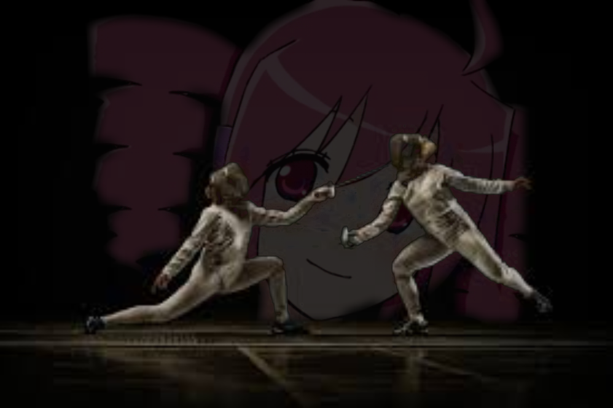
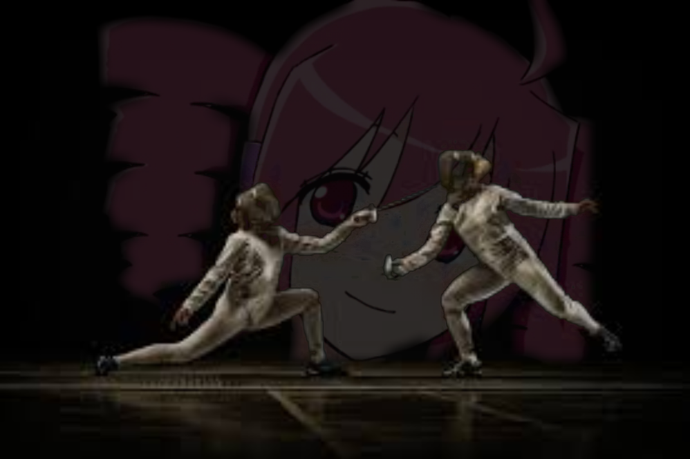

Hello everyone my name is marketplier
yes it is i, the plier of markets. market plier.

The part where i yap about teto aka the one i photoshopped
Kasane Teto is a popular Utauloid made by the members of 2channel 2008 April 1st as a joke. At the time Vocaloid a popular voice synthesizer was surging and members of the board website 2channel which can be compared to a Japanese alternative to 4Chan wanted to pull an April fools prank where they made a Utau, Since Vocaloid costed a hefty buck there were free alternatives, one such alternative was Utau which was infamous for being extremely difficult to use. They wanted to troll members of the Vocaloid community making them mistake Kasane Teto for a Vocaloid, and it was successful. Many people mistook Teto for a Vocaloid in 2008 and still to this day you can see people mistaking her for a Vocaloid. At the time members of 2channel saw Teto as a simple April fools joke little did they know that this character would become extremely popular.
With her appearance in Triple Baka released 2008 June 28th Featuring Akita Neru, Hatsune Miku and the star background vocalist Kasane Teto her charms reached and stole the hearts of many. Even though she didn’t have many lines to many she stole the show.
FUN TETO FACT!!! Did you know that within 6 months of Teto’s release she had already been in over 500 songs!
Another song that heavily impacted the history of Teto is the song Teto Territory (重音territory ～ ずっとテトのターン) on September 2009 explaining her origin and giving Teto a personality saying that she loves Baguettes and that the drills on her head do not spin, not to forget that she wants to become a real Vocaloid someday. She also brags about how unlike Hatsune Miku who costs $160 she only costs a low low price of free. Its important to note that her favorite food is Baguettes because Worlds most popular virtual idol Hatsune Miku’s favorite food is leeks, and the opposite of leeks are pure carbs in Baguettes. Funny inside joke.
Another Teto fact! Did you know she’s canonically 15 and 31 at the same time? Its because her gender is Chimera. As Teto once stated “GENDER IS FOR THE WEAK”
April 2nd 2023 was an extremely important day in the history of Teto. Kasane Teto Achieved her dream and became a commercial Vocal Synth for Synthesizer V a 100% free software that is meant to revolutionize Vocal Synth Software making robotic voices sound closer than ever to real if not indistinguishable from a real actual person. A good example I can give you is my personal favorite song by Teto “Fukkireta” or “Ochame Kinou” see the original here created May 2010 this version was created with Utau while this version as you can see it is significantly more difficult to tell it is a Vocal Synthesizer.
Honorable Mentions:
Machine Love – A tribute to Teto with all previous songs and all things Teto being contained in the video along with a good song. What more could you ask for!?
イライラしている！ / じん (Ira Ira Shiteiru!) – An amazing artistic representation of Teto going along with a wonderful song, the way they drew and animated Teto is satisfying and the very essence of perfection.
退廃的人生讃歌 (Hymn to the decadent life) – This is among my favorite Teto songs as a whole other than Machine Love. I love how good the music is and overall, I think the way they drew Teto is wonderful and the simplistic art style with the pastel colors wonderfully blends together. Also, it’s a good refresher from all the hyperactive Vocal Synthesizer songs as you’d quickly find out. There are no flashing lights nothing but pleasing easy on the eyes imagery.
ライアーダンサー (LIAR DANCER) – One of the funniest Teto songs. The art style is amateur in a loveable and laughable way but they still manage to make it light hearted, even having the chorus of the song ライアー（ライアー） ライアー（ライアー） ダンサー
素直で傷ついたあの日を
ライアー（ライアー） ライアー（ライアー） ダンサー
嘘で踊るのさ (Liar (liar) liar (liar) dancer, that honest and hurtful day, Liar (liar) liar (liar) dancer, I'll dance with lies)
Teto Fact number 3! Before YouTube removed YouTube annotations in 2019 the original Fukkireta was infamous for being nearly unwatchable due to the sheer number of annotations. You can see that here WARNING! Strong language used since it is the internet and it was unmoderated.
Now its time for my story.
It was 2020 I had stumbled upon Fukkireta, I immediately became obsessed with the song listening to it as much as possible to a point where I’ve memorized the lyrics despite not know an ounce of Japanese. But it only lasted a month or two until April 2nd 2023 one of my friends showed me that Teto had achieved her dreams, I thought to myself “Oh that’s that girl from that song I really like” and then moved on until I heard Psychological Façade by Ghost and Pals I don’t like the song too much now but its what led up to my hyper fixation I LOVED Psychological Façade almost as much as Fukkireta or at least obsessed over it in similar volume but left it at that, then the start of this year, something snapped. I bought a $30 Teto plush started exclusively listening to Teto, I started studying the history of Kasane Teto listening to every Teto song I could find, soon all I could think about is Teto and the Teto Pear meme made me cry laugh. This video made me fall over on the floor. Anyways that’s the comprehensive history of Kasane Teto and its impact on my life.